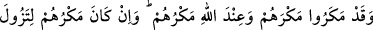
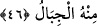

Sonra da: “Bu boyun kıran mihnetten,
Bu işkenceden kurtulsam,
Denizden başka bir yeri yurt edinmem;
Gölde, gölcükte yurt tutmam!”
O, nedâmet zahmetin sonucudur...
Define gibi parlak olan aklından geçmez.
O adam, tevbe eder ama akıl piri ona:
Geri döndürülseler yine yaparlar[39] diye bağırıp durur
Şu halde mü’mine düşen, ölümü çok hatırlamaktır. Çünkü bir mü’minde şu altı
özelliğin mutlaka bulunması gerekir:
1- Kendisini âhirete iletecek bir ilim,
2- Allah’a itâat hususunda yardım edecek, Allah’a karşı gelmekten sakındıracak bir
dost,
3- Düşmanını tanıyıp ondan sakınmak,
4- İbret almasını sağlayacak bir ibret,
5- Kıyâmet günü hasım olmasınlar diye bütün yaratılmışlara âdil/insâflı davranmak,
6- Kıyâmet günü rezil olmamak için ölüm gelmezden önce ölüme hazırlık yapmak.
46. Onlar tuzaklarını kurdular. Oysa tuzakları dağları yerinden kaldıracak
(cinsten) olsa bile onların tuzakları, Allah’ın yanındaydı (Allah onların tuzaklarını
bozar, cezâlarını verirdi.)
“Onlar tuzaklarını kurdular.” yâni, zulmedenler kendilerinden başka kimsenin gücü
yetmeyecek şekilde hakkı ortadan kaldırmak ve bâtılı yerleştirmek için ellerinden gelen
bütün gayreti göstererek ve bilinen tüm meşru sınırları çiğneyerek büyük bir tuzak
kurdular. Böyle olduğu halde biz yine zulmedenlere yapacağımızı yaptık. “Oysa
tuzakları” büyüklük ve şiddet konusunda “dağları yerinden kaldıracak” dağları
oldukları yerden yok edecek seviyede ve bu şekilde hazırlanmış cinsten “olsa bile
onların tuzakları,” hazırladıkları tuzaklarının karşılığı “Allah’ın yanındaydı (Allah
onların tuzaklarını bozar, cezâlarını verirdi.)
el-İrşâd’da der ki: “dağları yerinden kaldıracak olsa bile” demek ‘tuzakları son
derece sağlam ve kuvvetli olsa bile…’ demektir. Bu hususun ‘dağları yerinden
kaldıracak’ şeklinde ifâde edilmesi, onun darb-ı mesel olmasından ileri gelmektedir.